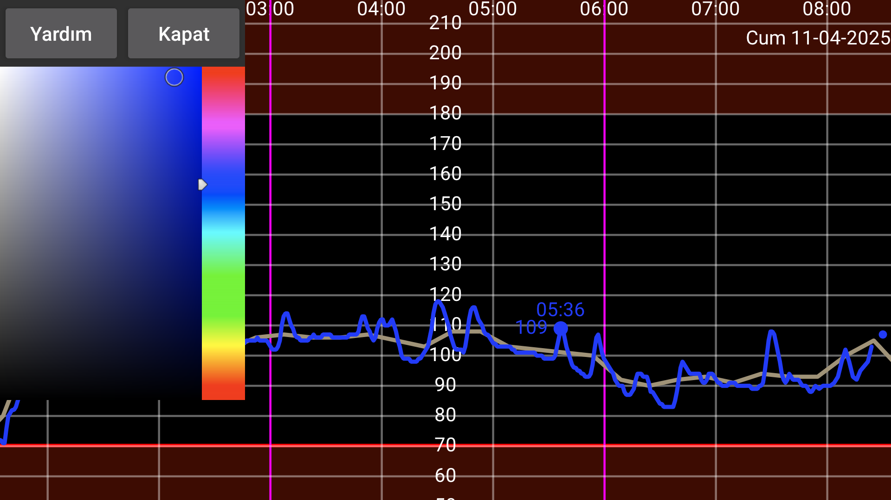

ar be de es fr it nl pl pt ru sv tr uk zh en
Burada sayıların, eğrilerin ve tarama noktalarının renklerini değiştirebilirsiniz. Bir eğrinin, taramanın veya miktarın bir noktasına dokunun (böylece o nokta veya miktar hakkında bilgi gösterilir). Bundan sonra renk görünümünde bir renge dokunun. Eğri, tarama noktası veya miktar artık o renkte gösterilecektir.
WearOS sürümünde geri tuşu olan bir saate ihtiyacınız var, geri kaydırma işlemi (hareketi) çalışmayacaktır.